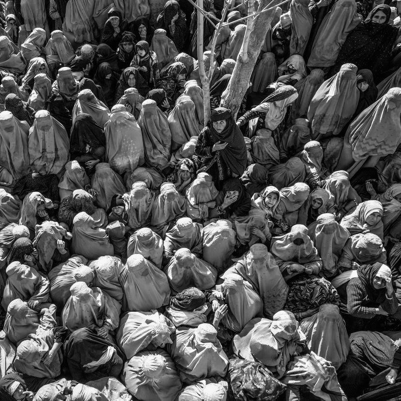
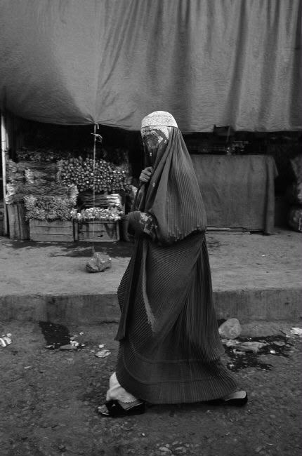
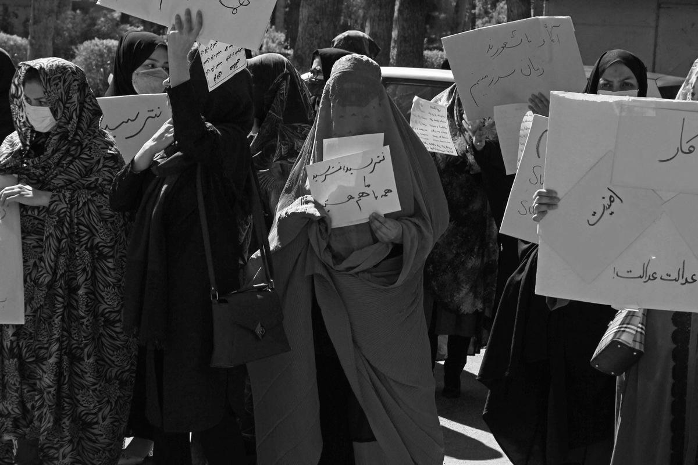
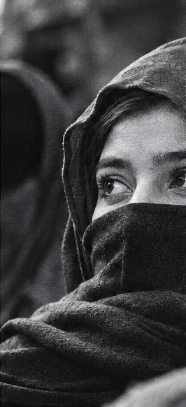
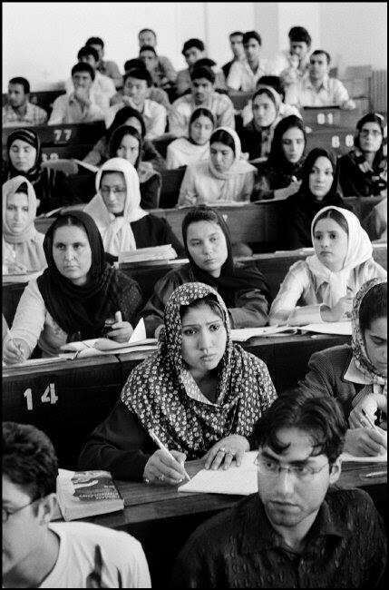
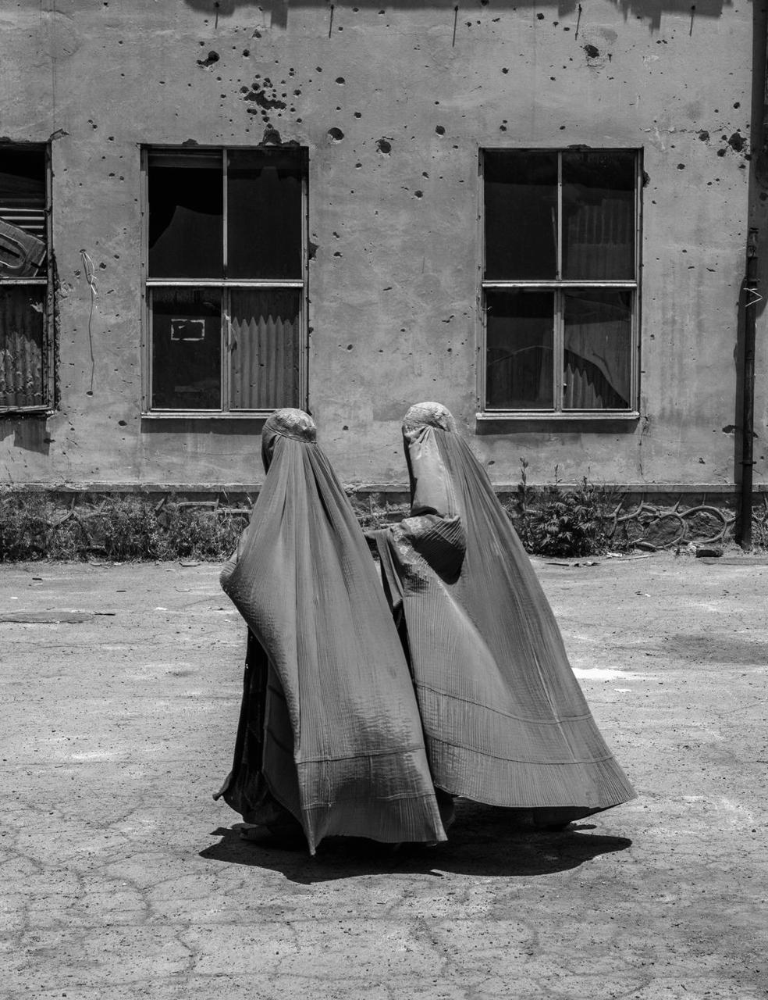

Voces que resisten: la mujer
afgana en la actualidad
La llegada de los talibanes al poder marcó un cambio profundo en la vida de las mujeres afganas. Las restricciones impuestas desde 1996 transformaron sus rutinas y limitaron su acceso a la educación, el trabajo y los espacios públicos. Tras la caída del régimen en 2001, muchas recuperaron oportunidades que parecían perdidas y comenzaron a construir nuevos proyectos personales y profesionales. Sin embargo, estos avances convivieron con la violencia y la desigualdad, dejando sus derechos expuestos a la inestabilidad del país. El regreso de los talibanes en 2021 volvió a interrumpir ese proceso, imponiendo nuevas prohibiciones y cerrando puertas que habían logrado abrirse. Este capítulo recorre una historia de cambios bruscos, expectativas frustradas y decisiones políticas que alteraron profundamente el futuro de millones de mujeres y niñas.
Una vida llena de
prohibiciones


Desde el regreso de los talibanes al poder en agosto de 2021, las mujeres afganas han enfrentado una creciente exclusión de la educación, el trabajo y los espacios públicos.
En septiembre de 2021, las niñas comenzaron a ser excluidas de la educación secundaria. En diciembre de 2022, las autoridades prohibieron a las mujeres asistir a las universidades. También se establecieron restricciones laborales y limitaciones para desplazarse sin un acompañante masculino, conocido como mahram.
En agosto de 2024, una nueva ley sobre la promoción de la virtud y la prevención del vicio reforzó las normas sobre vestimenta, movilidad y comportamiento, incluyendo restricciones a la voz de las mujeres en espacios públicos.
Estas medidas han reducido las posibilidades de que las mujeres participen libremente en la sociedad y construyan su propio futuro.
Las prohibiciones también alcanzaron espacios de entretenimiento y convivencia. En noviembre de 2022, se impidió a las mujeres ingresar a parques, gimnasios y baños públicos. Posteriormente, las autoridades ordenaron el cierre de los salones de belleza, que representaban una fuente de ingresos para miles de trabajadoras.
Las restricciones también afectaron a las organizaciones humanitarias. Desde diciembre de 2022, muchas mujeres dejaron de poder trabajar en estas instituciones, dificultando la atención de comunidades que dependían de su labor.

La invisibilización
de las mujeres
La exclusión de las mujeres afganas no se limita a impedirles estudiar o trabajar. También afecta su independencia, su presencia en los espacios públicos y su capacidad para tomar decisiones sobre sus propias vidas.
La ausencia de mujeres en universidades, instituciones políticas y numerosos sectores laborales contribuye a que sus necesidades y perspectivas tengan menos representación.
Esta situación también tiene consecuencias económicas y sociales. La imposibilidad de acceder a una educación superior limita las oportunidades laborales y aumenta la dependencia económica. Al mismo tiempo, las restricciones y la escasez de profesionales de salud femeninas dificultan el acceso a determinados servicios médicos.
de niñas afganas han sido privadas de educación secundaria durante los cinco años transcurridos desde el regreso de los talibanes al poder.
UNICEF GlobalResistir también es
existir
A pesar de las restricciones, las mujeres afganas continúan buscando maneras de defender sus derechos, mantener sus conocimientos y hacerse escuchar.
Algunas participan en iniciativas educativas comunitarias, otras trabajan en organizaciones lideradas por mujeres que brindan apoyo y servicios esenciales. También existen activistas y defensoras de derechos humanos que mantienen sus reivindicaciones dentro y fuera de Afganistán.
Estas formas de resistencia muestran que la pérdida de visibilidad en la vida pública no significa la desaparición de sus aspiraciones.

En 2026, cinco años después del regreso de los talibanes, la educación, la autonomía y la participación social de las mujeres continúan siendo cuestiones centrales para el futuro de Afganistán. Su ausencia en espacios de decisión afecta el desarrollo del país, mientras que las iniciativas lideradas por mujeres mantienen viva la defensa de sus derechos y visibilizan sus experiencias más allá de sus fronteras.

¿Cómo se pierde una libertad que alguna vez se conquistó?
Durante décadas, las mujeres afganas han sido testigos de profundos cambios que han transformado su lugar en la sociedad. Entre avances, conflictos y restricciones, sus historias revelan una lucha constante por la educación, la autonomía y el reconocimiento.
Bajo el velo del silencio es un recorrido por el pasado y el presente de estas mujeres, una mirada a los derechos conquistados, las voces silenciadas y la resistencia que persiste incluso en las circunstancias más difíciles.
Porque invisibilizar a una mujer no significa borrar su historia.